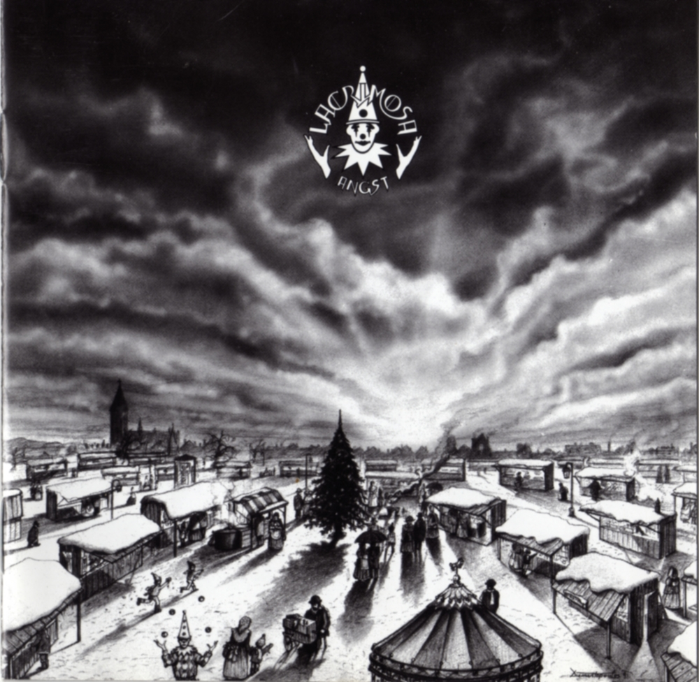
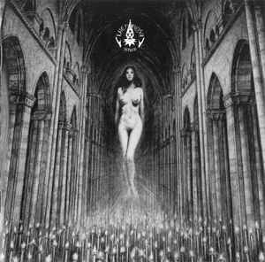
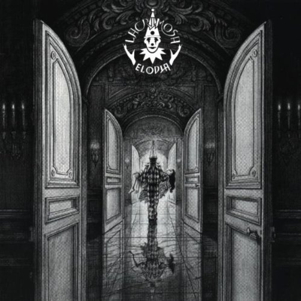

11 Lacrimosa

Lacrimosa es un dúo de metal gótico originaria de Alemania, fundada en 1990 por Tilo Wolff (vocalista y principal compositor), e integrada el año 1994 por la cantante finlandesa Anne Marjanna Nurmi. Mezclan diversos estilos musicales tales como, neoclásico, sinfónico, violines, trompeta, orquestal (órgano, piano), entre otros instrumentos clásicos. Sus letras están escritas principalmente en alemán, aunque algunos de sus álbumes tienen contenido en inglés, español, ruso, latín y finés. Sus canciones versan sobre la soledad, la analogía del hombre con el autómata, la tristeza, la oscuridad, la desesperación, confusión, la felicidad, el anhelo, la desesperanza, la muerte y el amor.
Integrantes Actuales: Tilo Wolff, Anne Nurmi.
Top Albums

Angst

Satura

Elodia